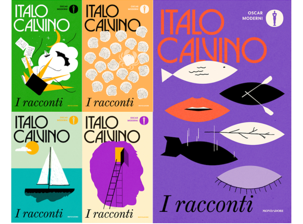
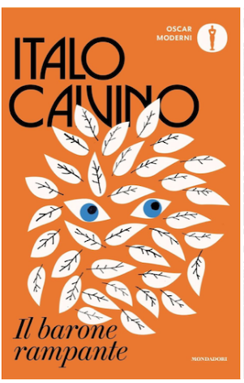
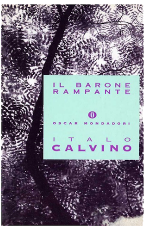

In onore dei 100 anni dalla nascita di Italo Calvino, la Mondadori ha rilasciato una nuova collana di copertine delle sue opere prodotte dal noto grafico irlandese Jack Smyth.
Star nel campo dell'editoria internazionale e vincitore del concorso rilasciato da Mondadori, Jack Smyth collabora a fianco dell’art director Cecilia Flegenheimer.
«Era stato chiesto di pensare copertine che fossero narrative, calde, giovanili e che trattassero Italo Calvino come un brand riconoscibile». dichiara Flegenheimer.
Le regole imposte riguardo il redesign;
rispettare le posizioni dei loghi della casa editrice previsti dalla struttura della collana.
non usare immagini esistenti per illustrare le copertine, per necessità di distaccarsi dalle precedenti edizioni.

VECCHIA EDIZIONE

Smyth in particolare era un lettore di Calvino da anni «Italo Calvino è un autore sia giocoso che serio, i suoi libri hanno un modo diverso di guardare le cose, sempre profondo ed esistenziale, ma in una maniera accessibile e gioiosa».